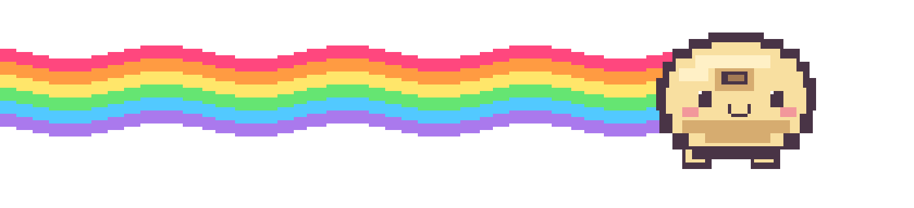
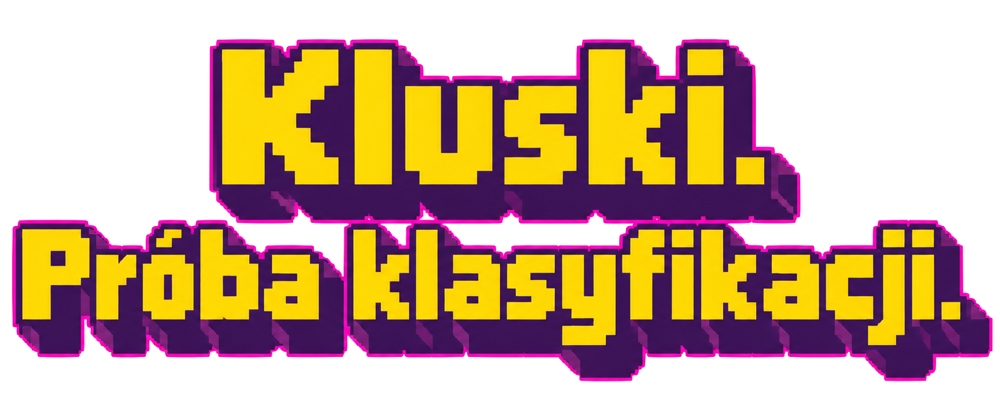
KLUSKI. PRÓBA KLASYFIKACJI.
Ziemniak · twaróg · mąka i jajko · drożdże · regionalny chaos
Podział umowny: według bazy ciasta, nie wszystkich składników.
01 / ZIEMNIAK
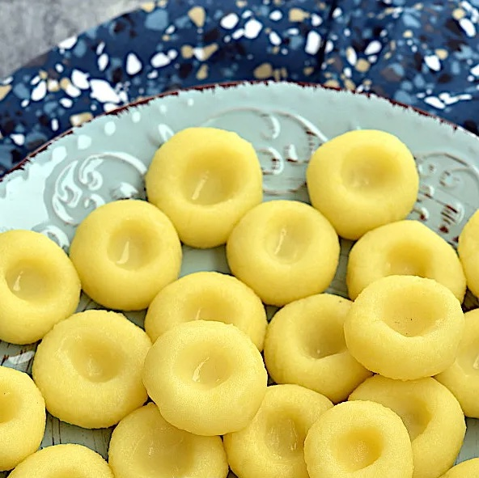
Ugotowany ziemniak
W tej grupie także kopytka.
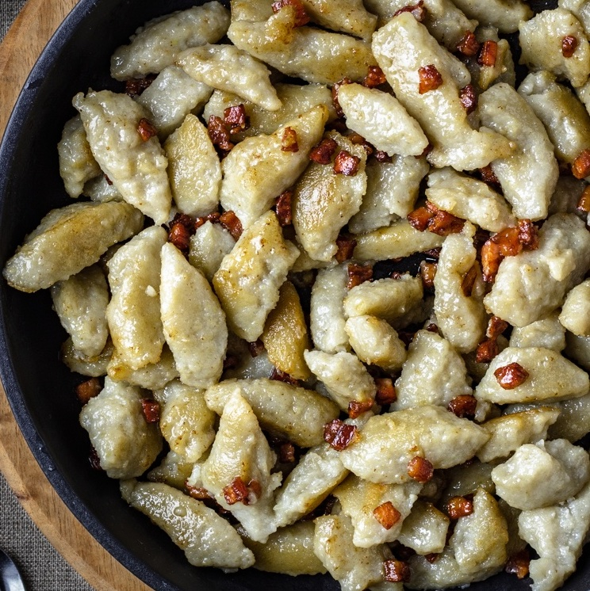
Surowy ziemniak
W tej grupie także goły.
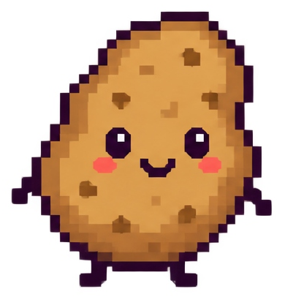
surowy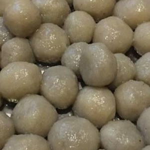
Surowy + ugotowany
Podobnie część pyz.
Nie „czy ziemniak?”, tylko „co mu zrobiono?”.
02 / TWARÓG
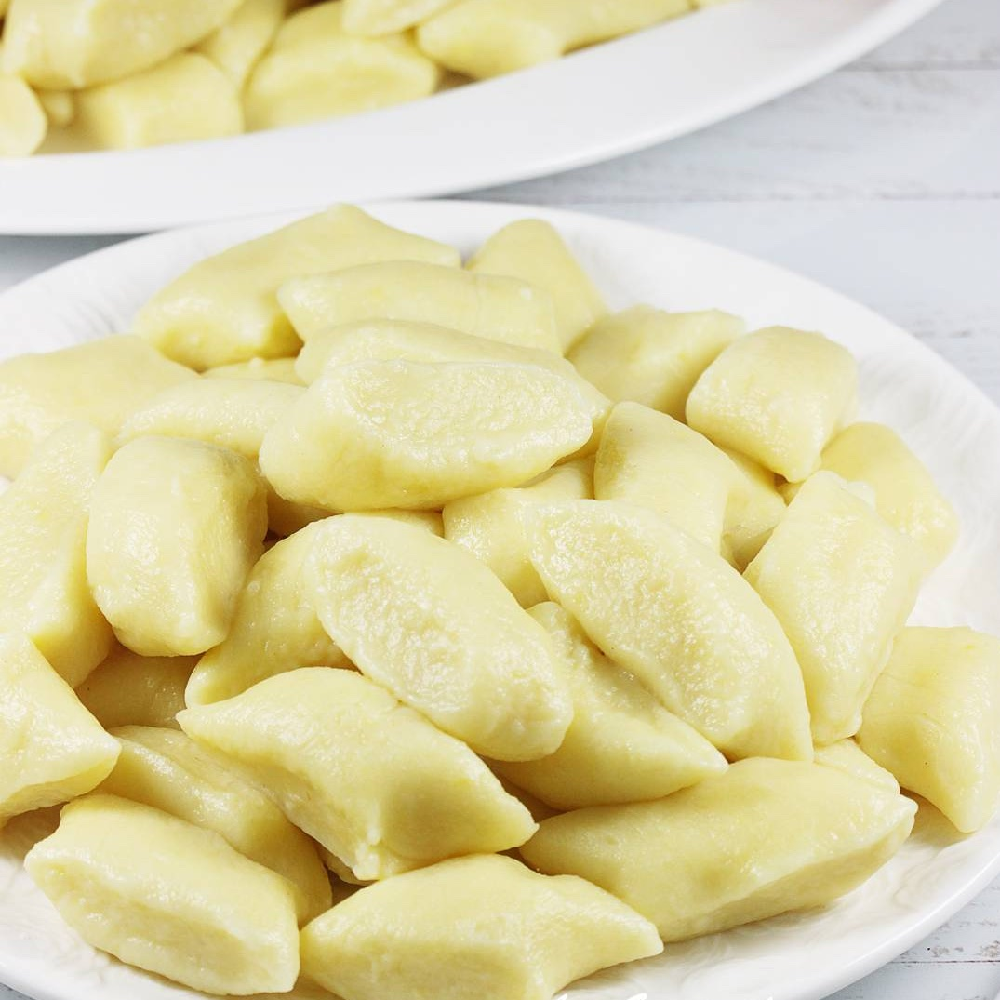
Baza: ziemniak
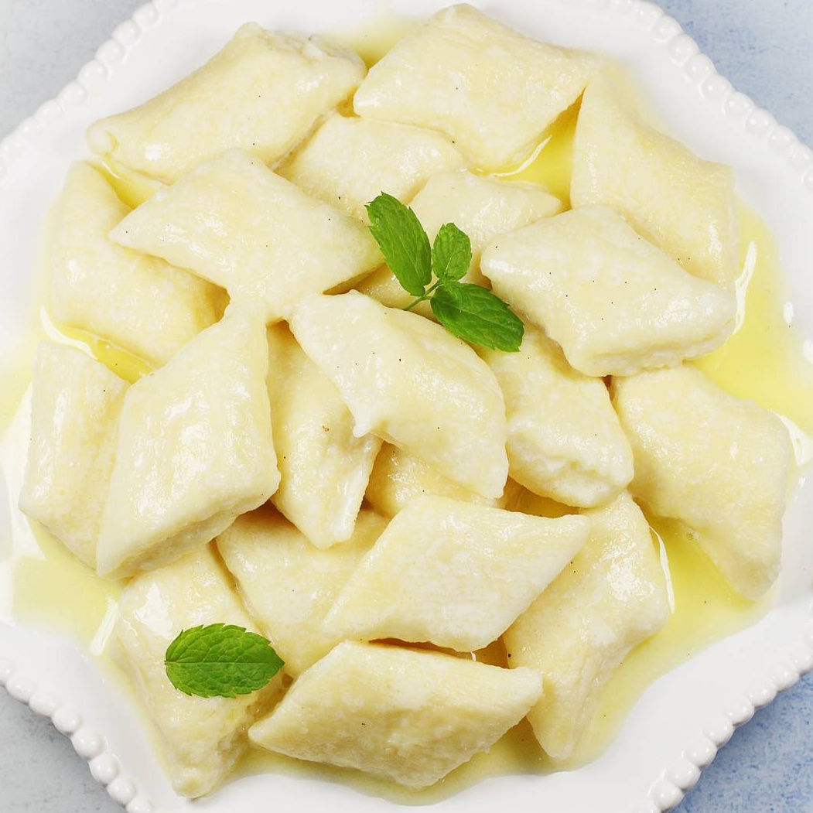
Baza: twaróg
Ziemniaki? Opcjonalnie.
Nie oceniaj kluski po szadze.
03 / MĄKA + JAJKO
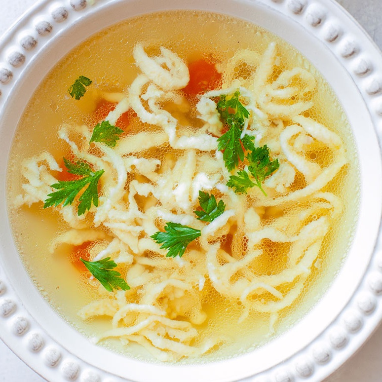
Rzadkie ciasto → strumień
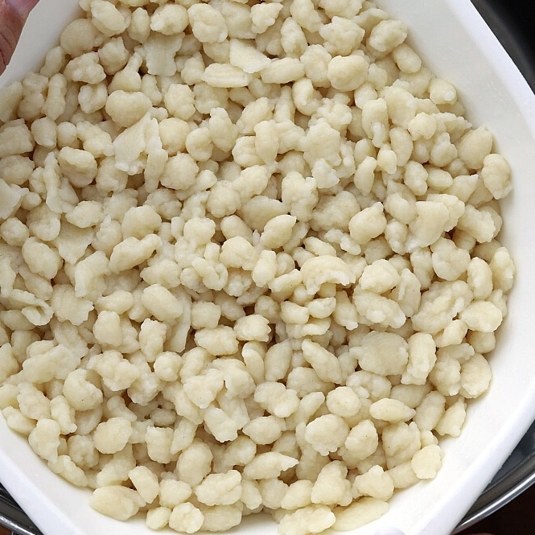
Twarde ciasto → tarcie lub rwanie
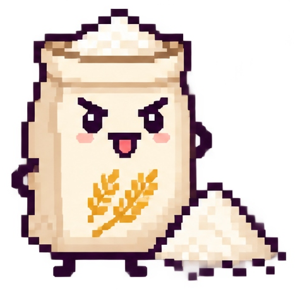
mąka + jajko„Lej, dziecko. Wszystko samo się ułoży.”
04 / TO SKOMPLIKOWANE
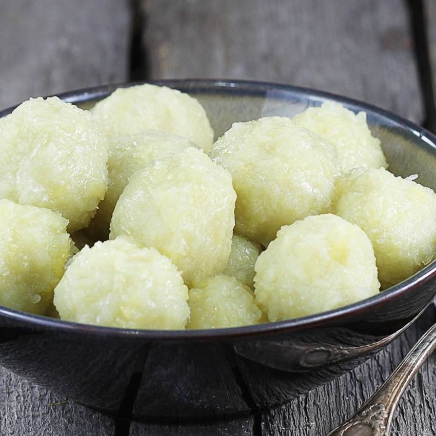
Ziemniaki w roli głównej.
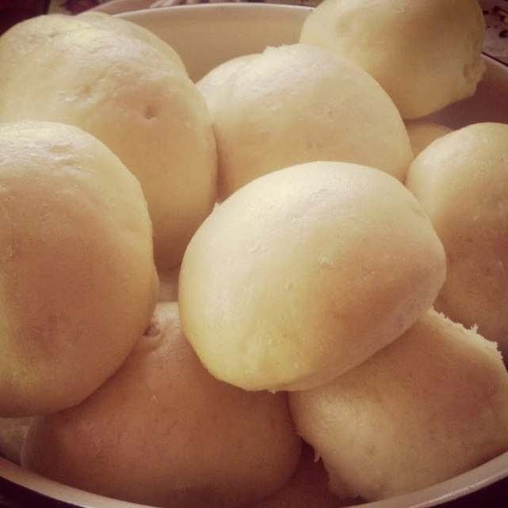
Ciasto drożdżowe i para.
Wszystkie opcje dozwolone.
05 / TO SKOMPLIKOWANE
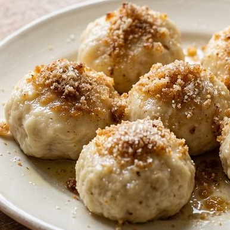
wielkopolska
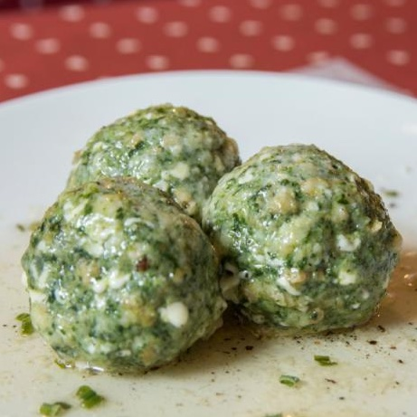
nowoczesne
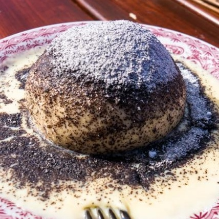
Austria
Knedel to nie przepis. To multiwersum.